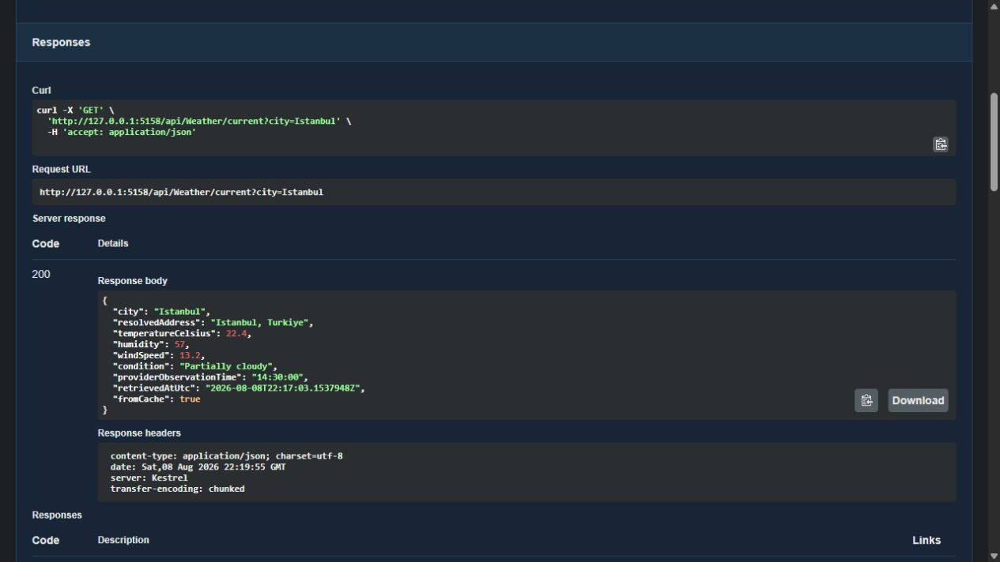
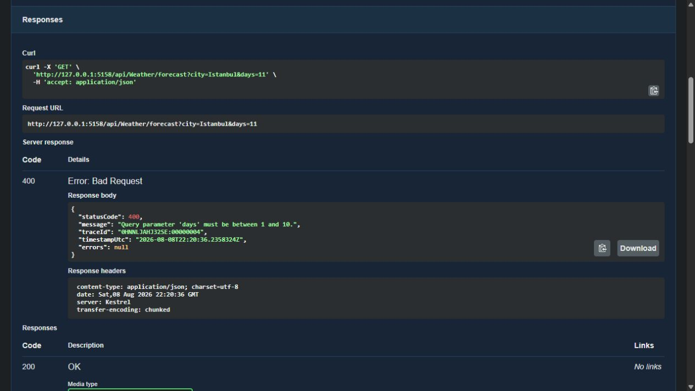

Bir dış servisin etrafında, belirgin bir API.
Hava durumu sağlayıcısının yanıtını doğrudan istemciye taşımak, uygulamayı sağlayıcının veri yapısına ve hata davranışına bağlar. Bu projede odağım, Visual Crossing verilerini ortak yanıt modellerine dönüştürmek ve güncel, tahmin ve geçmiş verilerini üç uç noktada sunmak oldu.
Tekrarlanan sorgularda Redis önbelleği devreye giriyor. Şehir, gün sayısı ve tarih doğrulaması API sınırında yapılıyor; sağlayıcı hataları ise istemcinin ayırt edebileceği HTTP durumlarına çevriliyor. Böylece veri çekme kadar, isteğin başarısız olduğu durumlar da sözleşmenin bir parçası oluyor.
Önce önbellek, gerektiğinde sağlayıcı.
- WeatherControllerGirdiyi doğrular; isteği IWeatherService üzerinden aktarır.
- WeatherService + RedisNormalize edilmiş sorgu anahtarıyla önbelleği kontrol eder.
- HttpClientCache miss durumunda dayanıklılık kurallarıyla sağlayıcıyı çağırır.
- Ortak JSON yanıtıVeriyi yanıt modeline dönüştürür, süreli önbelleğe yazar ve döndürür.
FromCache alanı yanıtın kaynağını, RetrievedAtUtc ise verinin alındığı zamanı gösteriyor. Sağlayıcının gözlem zamanı ayrı bir alanda tutuluyor. Önbellekten dönen veri, yeni alınmış bir gözlem gibi sunulmuyor.
Hız, güncellik ve hata sınırları.
Veri türüne göre cache süresi
Mutlak saklama sınırı güncel veride 10 dakika, tahminde 30 dakika, geçmiş veride 12 saat. Ayrı sliding süreleri kullanılıyor. Bu tercih, sağlayıcı çağrılarını azaltırken farklı verilerin güncellik ihtiyacını gözetiyor.
Redis hatasında devam
Cache okuma veya yazma hatası, sağlayıcıdan yanıt alma yolunu kapatmıyor. Bunun karşılığı, önbellek kullanılamadığında dış servis çağrılarının artabilmesi. Çağıranın isteği iptal etmesi ise hata gibi yutulmuyor.
Sınırlandırılmış yeniden deneme
HttpClient hattında jitter içeren retry, deneme başına timeout, toplam timeout ve circuit breaker var. Toplam süre 20 saniye, deneme sınırı 8 saniye. Amaç, geçici sorunlara tolerans tanırken sınırsız beklemeyi önlemek.
Ortak hata sözleşmesi
Doğrulama, bulunamayan şehir, sağlayıcı sorunu ve timeout ayrı HTTP durumlarına eşleniyor. Hata gövdesinde durum, mesaj, izleme kimliği ve zaman bulunuyor; beklenmeyen iç hata ayrıntıları yanıt metnine taşınmıyor.
Swagger üzerinden çalışan sözleşmeler.
Görüntüler, uygulamanın yerel Swagger oturumlarından alınmıştır. İzole Redis ve deterministik yerel sağlayıcı verisi kullanılır. Gösterilen değerler canlı hava durumu değildir.


fromCache: true, verinin önbellekten geldiğini gösteriyor; hava durumu değerleri yerel gösterim verisi.
days=11 sorgusu, izin verilen aralığın dışında. Yanıt, standart JSON yapısıyla 400 durum kodu döndürüyor.Başarılı yanıtın ötesindeki davranışlar.
xUnit testleri; veri eşleme, tekrar çağrıda önbellek kullanımı, hatalı sorgular, bozuk sağlayıcı JSON'u, timeout ve açık circuit davranışlarını kapsıyor. Başlangıçta eksik API anahtarı veya geçersiz sağlayıcı adresi de doğrulanıyor. Ayrı resilience testleri, DI üzerinden kurulan gerçek HTTP dayanıklılık hattını ve çağıran iptalini ele alıyor.
Uygulama entegrasyon testlerinde sağlayıcı kontrollü bir HTTP handler, cache ise bellek içi bir uygulama ile değiştiriliyor. Bu testlerin sonucu, canlı sağlayıcı veya gerçek Redis bağlantısının doğrulanması anlamına gelmiyor.
Kaynak depodaki başarılı CI çalıştırması; biçim kontrolü, bağımlılık denetimi, Release derleme, test ve coverage çıktısı ile Linux üzerinde Docker Compose derlemesini içeriyor.
Yerel geliştirme ve portfolyo odağı.
Proje, dış servis erişimi ile uygulama davranışını ayrı sınırlar içinde ele alma çalışması. Yerel çalıştırma ve Docker Compose adımları depoda bulunuyor. Authentication ve rate limiting bu sürümün kapsamında değil; herkese açık bir API demosu sunulmuyor.